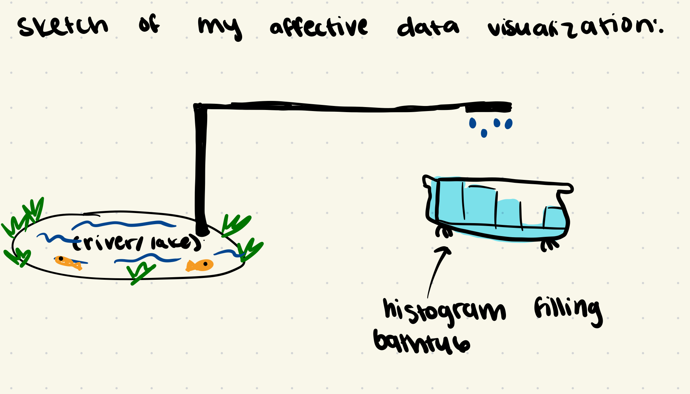
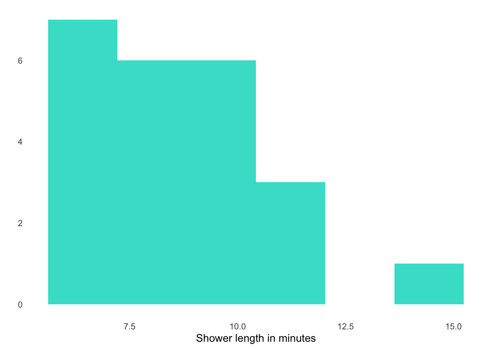
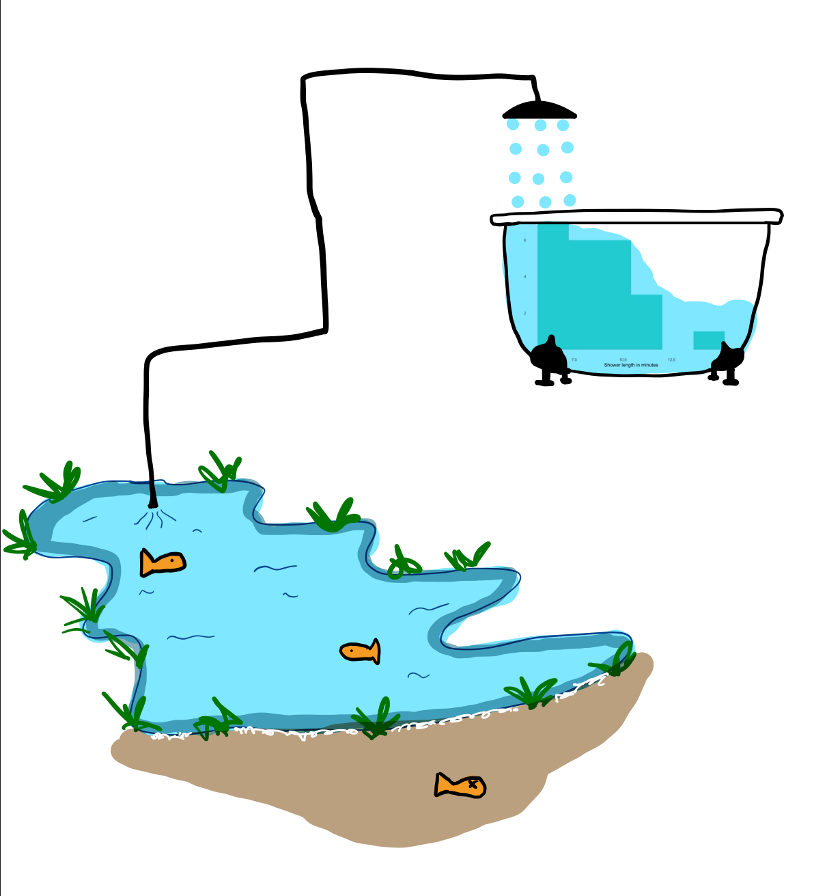

library(tidyverse)
library(here)
library(flextable)
library(janitor)
library(dplyr)
my_data <- read_csv(here("data", "my_data.csv"))ENVS 193DS HW 03
Problem 1. Personal data (30 points)
a. Data summarizing (5 points)
In 1-2 sentences, describe how you could summarize your data to compare your response variable between categories or groups of your choosing. For example, are you counting observations and comparing counts between groups? Are you taking the mean and comparing means between groups? Are you finding the maximum, minimum, range? Are you adding numbers together?
Be sure to describe why comparing between the groups you chose is informative. For example, you might calculate the mean number of steps you take to compare between week days, but what about those weekdays is different (e.g. “I could calculate the mean number of steps I took to compare average step count between weekdays because I have more classes on Monday than on any other day of the week, so I think I walk more on Monday.”)
I am trying to figure out whether or not my average shower length differs between work days and non work days, as my job is outside. I could look at the shower length of work days and non work days, and compare them by looking at the both means and standard errors.
b. Visualization (10 points)
Using the summary you described in part a, create a visualization of your data comparing your summarized response variable between groups. If you are calculating a mean or median, show the underlying data in addition to your summary.
Use colors in your figure (that are not the default ggplot settings).
Make sure your axis labels are full, readable text (not just your column names).
my_data_clean <- my_data |> # starting with my personal data frame
clean_names() |> # simplifying my column names
mutate(
shower_length_min = trimws(shower_length_min), # Trim whitespace
shower_length_min = na_if(shower_length_min, "n/a"), # Replace "n/a" with NA
shower_length_min = as.numeric(shower_length_min) # Convert to numeric
)
my_data_clean# A tibble: 23 × 7
date shower_length_min work_day weather_degrees_f work_type gym_y_n time
<chr> <dbl> <chr> <dbl> <chr> <chr> <time>
1 4/18/25 8.6 N 60 n/a N 07:30
2 4/19/25 7.3 N 64 n/a N 16:55
3 4/20/25 7.2 N 60 n/a N 18:30
4 4/22/25 10.5 Y 65 CCBER N 14:57
5 4/23/25 11.2 Y 61 CCBER N 13:30
6 4/24/25 6.2 Y 60 DSP Y 19:57
7 4/25/25 7.5 Y 62 DSP N 08:00
8 4/26/25 9.8 N 58 n/a Y 12:30
9 4/27/25 9.33 N 60 n/a N 10:15
10 4/29/25 9.36 Y 63 CCBER N 12:29
# ℹ 13 more rowsggplot(my_data_clean, aes(x = work_day, # x axis work day
y = shower_length_min, # y axis shower length
color = work_day)) +
# Add individual data points with jitter
geom_jitter(data = my_data_clean,
aes(x = work_day, y = shower_length_min),
width = 0.2, # jitter horizontally
alpha = 0.4) +
# Customize theme and labels
stat_summary(fun = mean, #showing the mean
geom = "point", # making a point for the mean
shape = 18, # changing shape to triangle
size = 2, # changing size of the point
color = "darkblue" # changing color of the point
) +
stat_summary(geom = "errorbar", # showing error bars
fun.data = mean_se, # showing the mean standard error
width = 0.1, # adjusting the bar width
color = "purple") + # making the color of error bars purple
theme_minimal() +
theme(legend.position = "none") +
labs(x = "Work Day (yes or no)",
y = "Shower Length (min)",
title = "Shower length in minutes on Work and Non Work Days") +
theme(axis.text = element_text(size = 12),
axis.title = element_text(size = 10),
title = element_text(size = 10)) +
scale_color_manual (values = c("N" = "#123456", "Y" = "#237237"))c. Caption (5 points)
Write a caption for your figure.
Figure 1. Shower Length in Minutes on Work days and Non Work days. Each point represents a shower (min). N = non work day, Y = work day. Error bars represent the standard error and purple diamond point represents the mean shower length n minutes for each group.
d. Table presentation (10 points)
Using gt or flextable, create a table with the same data summary that you describe in part a and visualized in part b. For example, if you described and visualized means, make a table with means. If you need to, round any numbers to one decimal point.
Display the output.
my_data_summary <- my_data_clean |> # starting with my clean data frame
group_by(work_day) |> # grouping by work day
summarise(mean = round(mean(shower_length_min), 1), # calculating mean and rounding mean to 1 decimal
sd = round(sd(shower_length_min), 1), # calculating standard deviation of shower lengths rounding to one decimal point
n = length(shower_length_min), # calculate number of observations for shower lengths
se = round(sd / sqrt(n), 1), # calculating the standard error
ci_lower = round(mean - qt(0.95, n-1) * se, 1), # calculating the lower bound for 95% CI
ci_upper = round(mean + qt(0.95, n-1) * se, 1) # calculating the upper bound for 95% CI
)
my_data_table <- my_data_summary |> # starting with my summary
select(work_day, mean, sd, n, se, ci_lower, ci_upper) |> # selecting values to display
flextable() |> # using flextable function to create my table
set_header_labels(work_day = "work day yes or no",
mean = "Mean",
sd = "Standard Deviation",
se = "Standard Error",
ci_lower = "95% CI Lower",
ci_upper = "95% CI Upper"
) |>
add_header_lines("Shower length in minutes on work days compared to non work days") |> #creating header lines
theme_box() |> # adding a boxed theme to the table
autofit() # making sure the table fits within the rendered document
my_data_table # displaying the tableShower length in minutes on work days compared to non work days | ||||||
|---|---|---|---|---|---|---|
work day yes or no | Mean | Standard Deviation | n | Standard Error | 95% CI Lower | 95% CI Upper |
N | 8.3 | 1.8 | 12 | 0.5 | 7.4 | 9.2 |
Y | 8.8 | 2.3 | 11 | 0.7 | 7.5 | 10.1 |
Problem 2. Affective visualization (24 points)
a. Describe in words what an affective visualization could look like for your personal data (3-5 sentences). (2 points)
For my personal data, I have been tracking different factors that could impact the length of my showers, mainly focused on whether or not I had work that day. In order to bring my project back to the environmental impacts, I think it would be interesting to make a plot with my minutes showered lined up, (perhaps a histogram), and connect the dots to make a waterline. I think it would be interesting to have a shower head attached to a lake filling up the water.
b. Create a sketch of your idea. (2 points)
Include a photo of this sketch in your submission.
knitr::include_graphics("sketch.jpeg")
c. Make a draft of your visualization. (12 points)
affective_viz <- ggplot(data = my_data_clean, aes(x = shower_length_min)) + #setting parameters
geom_histogram(fill = "turquoise", # making my histogram
bins = 6) + # log2(23) + 1 = 5.52, rounded up to 6 bins
theme_minimal() + # minimizing theme
labs(x = "Shower length in minutes", # including x axis title
y = " ") + # making y axis title blank
theme(panel.grid = element_blank()) # removing gridlines
affective_viz
knitr::include_graphics("affective_viz.jpeg")
d. Write an artist statement. (8 points)
An artist statement gives the audience context to understand your work. For each of the following points, write 1-2 sentences to address:
- the content of your piece (what are you showing?)
In my piece, I am showing how consumption of freshwater for showering can impact water availability for nearby ecosystems. I have my histogram of shower length (min), inside of a bathtub with a shower head siphoning water out of a lake, and how the receding waterline is impacting the fish.
- the influences (what did techniques/artists/etc. did you find influential in creating your work?)
I was thinking about the lorax by Dr. Seuss while making this, and the fish that needed to leave the lake after the decimation of the trufula trees.
- the form of your work (written code, watercolor, oil painting, etc.)
I used written code to visualize my histogram, and then the goodnotes app on my ipad to create the rest of the visualization.
- your process (how did you create your work?)
After creating my initial sketch, I created the histogram using r. I then drew the rest of the visualization with my apple pencil on my ipad, using the goodnotes app.
Problem 3. Statistical critique (36 points)
At this point, you have seen and created a lot of figures for this class. Revisit the paper you chose for your critique and your homework 2, where you described figures or tables in the text. Address the following in full sentences (3-4 sentences each).
For this section of your homework, you will be evaluated on the logic, conciseness, and nuance of your critique.
a. Revisit and summarize (6 points)
What are the statistical tests the authors are using to address their main research question? (Note: you have already written about this in homework 2! Find that text and provide it again here!)
The essential question that the authors are addressing in this paper is, how do the researchers and staff positively impact the Leatherback Sea Turtle population at the Pacuare Nature Reserve? The authors aim to answer this by analyzing the nesting ecology and population trends of the sea turtles, in order to further develop their conservation plans.
Insert the figure or table you described in Homework 2 here.
knitr::include_graphics("curved_carapace_clutch_size.png") # including screenshot of graph b. Visual clarity (10 points)
In 1-3 sentences, answer the question that best fits your paper.
If you inserted a figure in Part a: How clearly did the authors visually represent their statistics in figures? For example, are the x- and y-axes in a logical position? Do they show summary statistics (means and SE, for example) and/or model predictions, and if so, do they show the underlying data?
The x- and y- axes are in logical positions, as curved carapace length (cm) is the predictor variable and clutch size is the response variable. They showed the summary statisics by showing the model prediction (solid linear regression line with two dashed lines representing the 95% confidence intervals). They showed the underlying data with open circle points, each representing a female turtle curved carapace length (cm) and her clutch size.
c. Aesthetic clarity (10 points)
In 1-3 sentences, answer the question that best fits your paper.
If you inserted a figure in Part a: How well did the authors handle “visual clutter”? How would you describe the the data:ink ratio?
The authors used a minimal theme, without gridlines, and they also used open circles to show the underlying data. Overall, I would say this figure has a high data:ink ratio as the figure is not visually cluttered.
d. Recommendations (can be longer than 4 sentences, 10 points)
What recommendations would you make to make the figure or table better? What would you take out, add, or change? Provide explanations/justifications for each of your recommendations.
I would change some of the verbiage in the figure caption to better communicate the positive correlation between female size and clutch size. The original caption says, “Fig. 4 Relationship between clutch size and female size (curved carapace length). The solid line corresponds to loess regression (n = 330 nesting females) and the dashed lines indicate approximate pointwise 95% confidence intervals.” I would update the caption to say, “Fig. 4 Positive correlation between clutch size and female size (curved carapace length). The solid line corresponds to loess regression (linear regression, r2 = 0.12, F = 37.21, P < 0.05, n = 271; Fig. 4).) and the dashed lines indicate approximate pointwise 95% confidence intervals.”